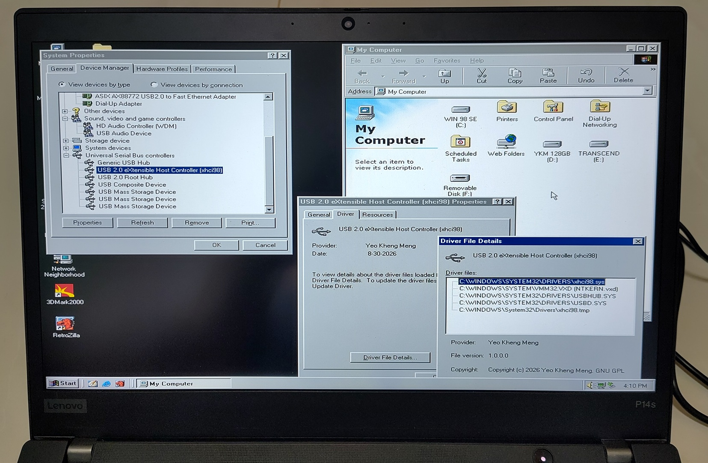
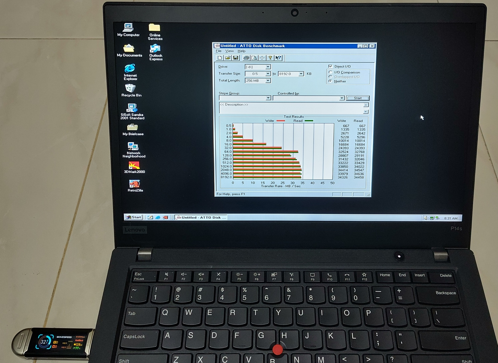
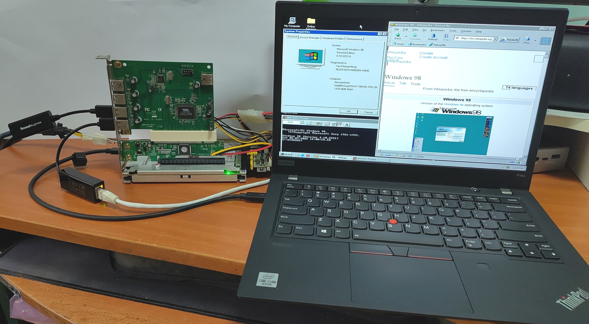
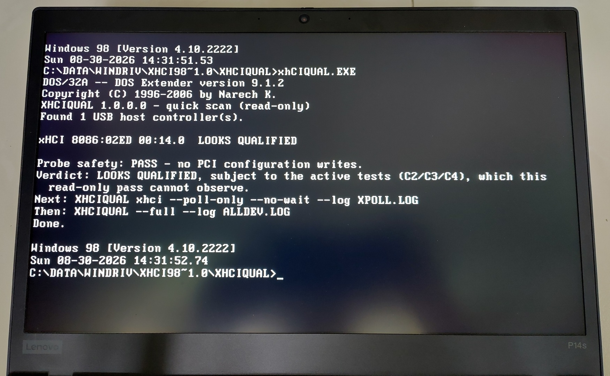
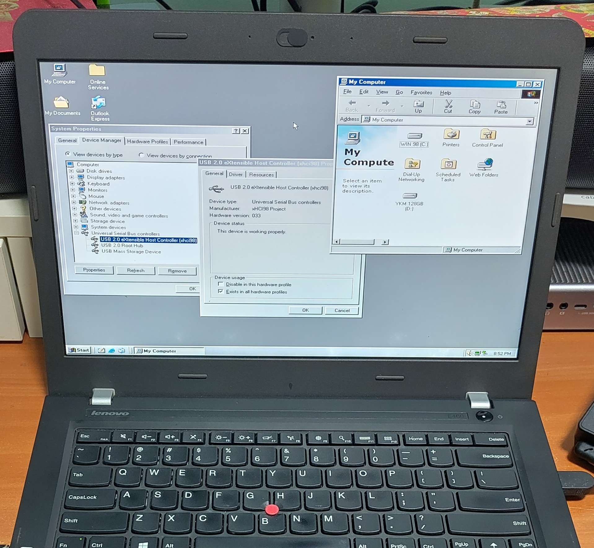

Most of us take the USB ports on our computers for granted. We plug in devices and expect them to work automatically with the operating system. However, what if this wasn’t the case with vintage operating systems?
I present to you xHCI98, a driver that gives Windows 98 SE, ME and 2000 SP4 working USB on machines whose only USB controller is xHCI.

Windows 98 Device Manager showing xHCI Controller initialised and ready to accept USB devices on an operating system that previously could not support it.
Everything is open-sourced here if you want to jump right in to use it: https://github.com/yeokm1/xhci98.
All text below have been written and phrased by me and not AI. Only the diagrams and tables are AI created.
Demos
Demo video here showing me hotplugging many different types of USB devices to my 2020 ThinkPad P14s Gen 1. Hotplugging shows that the driver is handling this and not the BIOS.

ATTO Disk Benchmark on a USB 3.0 flash drive tops up around 18 MB/s. That is within USB 2.0 High-Speed which is all this driver supports and I’ll explain why below.
Background
The USB host controller on most modern PCs today is based on the Extensible Host Controller Interface (xHCI) USB 3.0 standard. It was first publicly finalised by Intel in 2010 and is now the de facto standard superseding prior USB host standards. Updates to the standard have been provided over the years with the latest now at 1.2c.
Given its relatively recent introduction, only modern operating systems like Windows 8 onwards natively support it. Supporting older machines will require the chipset vendors to provide the driver stack which is the case back to Windows XP. What if we want to go back further?
Motivation
Earlier this year, I set up Windows 98 SE on my relatively modern 2020 ThinkPad P14s Gen 1.

More details of this machine here: https://github.com/yeokm1/retro-configs/tree/master/laptops/thinkpad-p14sg1
It first came to my attention then that Windows 98 and many legacy operating systems do not support the xHCI Controller. Even if the USB device or ports are USB 2.0 based, they still will not work as those ports are controlled by xHCI.
I came across this idea of using a USB 2.0 PCI card to bypass this issue from Omores’s YouTube video xHCI vs. EHCI: The Secret to Getting USB 2.0 back on Windows 9x and 2K.
Since a laptop does not have a PCI slot, I used a TH3P4G3 Thunderbolt eGPU dock to connect a PCI USB 2.0 EHCI card giving this oddball chain of old and new parts: Thunderbolt -> eGPU dock -> PCIe-PCI adapter -> VIA USB 2.0 PCI card -> USB adapters.
Windows 98 SE actually does not natively support USB 2.0 but a driver project called NUSB 3.3E and Sweetlow USB 2.0 stack backported newer Microsoft’s drivers to enable this to work.
While that literal tower of adapters worked, it was an eyesore and not very elegant in my opinion. So I wanted to see if I could build a native xHCI driver for Windows 98. Especially with AI assistance today, this should be possible right?
Why xHCI is hard
I looked around existing implementations and found that most xHCI implementations are in major OSes like Windows 8 onwards, modern Linux, BSD and macOS written by a major company or a large project. Other projects mostly stop at the previous USB standards of UHCI, OHCI (USB 1.x) and EHCI (USB 2.0).
During the course of this project I found out the hard way why this is so.
The specification is huge and the controller is not simple. The xHCI 1.2c specification runs to 600 pages.
The driver has to set up a whole family of data structures before the controller does anything. Plenty of concepts to grasp like the command/event/transfer rings, Slot/Endpoint/Input Contexts and Doorbell etc. Every one of those data structures have exact alignment rules and a small mistake just causes a controller hang.
I believe the vendors who shipped xHCI drivers for Windows XP and 7 did so because those OSes still had a market. For Windows 98 there was never a commercial reason.
But with such advanced AI today which is able to crunch through the entire specification and reference existing open-source code, things are definitely different compared to months or years ago.
Why only USB 2.0 on a USB 3.0 controller
My first decision was to not write the whole USB stack.
Windows 2000’s USB stack (and NUSB’s backport of it to Windows 98) is split into two layers.
-
usbport.sysis Microsoft’s port driver that owns the root hub, enumeration, USB Request Block (URB) parsing and everything the class drivers talk to. -
Underneath it sits miniport drivers, one per controller type that only knows how to talk to their hardware, the
usb*hci.sys.
xHCI98 is just another miniport. xhci98.sys plugs in underneath usbport.sys exactly the way usb*hci.sys does and only owns the xHCI hardware.
Everything in green and blue on the top half is Microsoft’s stack and orange is this project. Purple is the USB 2.0 ports the driver manages and the greyed-out miniports and controllers are the legacy path that xHCI-only machines no longer have.
usbport.sys is a USB 2.0-era design. It has no concept of SuperSpeed and neither does anything above it. Doing USB 3.0 properly would mean replacing the entire host controller driver (HCD) stack on the operating systems and I doubt many machines using those OSes would benefit from that speed anyway.
Fortunately every USB 3.0 connector also carries the USB 2.0 wires and xHCI exposes them as a separate logical port per connector. The driver manages those USB 2.0 ports and leaves the USB 3.0 ports unpowered. A SuperSpeed device upon not detecting any active USB 3.0 lines, then falls back onto the USB 2.0 pins of the same connector and runs at High-Speed. That is why the flash drive above benchmarks at USB 2.0 speed.
Although my project primarily targets Windows 98, the USB stacks of Windows 98 (via NUSB), ME (via Sweetlow) and Windows 2000 are similar enough that this driver supports all the OSes.
XHCIQUAL: Qualify the machine before touching Windows
Before the driver existed, I wanted a way to know if a machine’s xHCI Controller can even work with Windows 98 before I waste effort on a driver which may not even succeed.
One concept that stood out in the xHCI specification is its preference for Message Signaled Interrupts (MSI/MSI-X) over legacy line-based interrupts (INTx). INTx kept only as a fallback.
MSI is a memory write to the CPU’s local Advanced Programmable Interrupt Controller (APIC) whose address and vector the OS must allocate and program into the device.
MSI support was only integrated in Windows Vista onwards so none of the older OSes have this. The driver therefore has to rely solely on the controller’s fallback INTx pin.
To test if my machine has implemented the interrupt to determine if this project is even possible, I worked on a tiny qualification program called XHCIQUAL.EXE to verify this capability. It is a DOS tool built with Open Watcom 2.0 and the DOS/32A extender.

Running it with no arguments gives a read-only one-line answer per controller.
Running it with the xhci argument exercises the controller fully.
Video of the tool in action.
Referencing existing code
The usbport.sys miniport interface was never documented by Microsoft. There is no header, no import library and no sample in the Windows 2000 DDK.
Therefore I looked into open source implementations where I referred to ReactOS usbport.
With AI’s help I got to port over the references to this project but how would I know if those worked?
I asked AI to use those function interfaces to create a spike solution first. A stub xhci98.sys that registers with usbport.sys on Win 98 and Win 2000 proves the lifecycle callbacks can be received.
I also referred to Linux xHCI driver as the reference and got the idea of a command watchdog from it. It made me look further at the xHCI specification which says software is responsible for all command timeouts.
It says the timeout should be 5 seconds up an escalating chain before asserting Host Controller Reset (HCRST) to reset the Controller which I had initially missed.
Architecture and flow
This is architecture diagram of the driver as well as the flow:
Every command and data transfer follows this flow:
- The driver writes into the ring.
- Rings a doorbell
- Waits for the answer on the event ring.
Transfer rings work identically, one per endpoint with a doorbell per device slot.
The driver is C89 built with MSVC 6.0 and the Windows 2000 DDK, a setup I borrowed from the WDMHDA project.
Test targets
Almost all development happened in QEMU with its qemu-xhci device. Three VMs:
- Windows 98 SE guest with NUSB
- Windows 2000 SP4 guest
- Windows 2000 SP4 guest with the SMP (Symmetric Multi-Processing) on two CPUs. This is to test if there are any race conditions associated with multiple CPUs.
The driver is built in three flavours from the same source to assist in testing.
release: Typical driver to use.debug: A checked build that provides additional pointers for deeper diagnosis. Built separately to avoid introducing security loopholes on Windows 2000.qemu: QEMU-only and never published. It is the debug build plus a log channel that writes to QEMU’s debug console on I/O port0xE9.
There is also an automated qemu test configuration matrix that plugs and unplugs multiple devices repeatedly across the all
One PowerShell command boots each guest, plugs and unplugs every USB device model QEMU can emulate through the monitor socket, reads counters out of the running driver and writes a pass/fail report per device per target.
The real hardware is two Intel xHCI-only ThinkPads both running Windows 98 SE:
| Machine | Controller |
|---|---|
| ThinkPad E460 (2016) | Skylake, Sunrise Point-LP. xHCI 1.0, 18 ports (12 USB 2.0 managed, 6 USB 3.0 left unpowered) |
| ThinkPad P14s Gen 1 (2020) | Comet Lake PCH-LP. xHCI 1.1, 18 ports (same split) |
I chose both machines as they represent what I believe to be the extreme ends of who will find this project useful.

The 2016 Thinkpad E460 uses the Intel Sunrise Point 100-series Platform Controller Hub (PCH) chipset paired with Intel’s 6th-generation Skylake CPUs. Starting with this chipset, Intel removed physical EHCI USB 2.0 controllers entirely, routing all USB ports to the single xHCI controller.
The 2020 Thinkpad P14s Gen 1 is amongst the last laptops that officially support UEFI-CSM which allows legacy BIOS-based operating systems like Windows 98 to be booted.
It’s a pretty narrow band of machines that will find this useful but my machines happen to fall into this band.
External test USB devices
I cobbled together a wide array of USB test devices in my possession to exercise the driver.
| Speed | Type | Device |
|---|---|---|
| High | Hub | Terminus 7-port hub, multi-TT |
| High | Hub | Terminus 4-port hub, single-TT |
| High | Hub | Genesys 7-port hub (two cascaded chips) |
| Low | HID | Logitech USB Optical Mouse |
| Low | HID | Microsoft Wired Keyboard 600 (composite) |
| High | Mass storage | SanDisk U3 Titanium flash drive |
| SuperSpeed | Mass storage | MSSU10-128GSR and SanDisk 3.2Gen1 USB 3.0 flash drives |
| SuperSpeed | UAS (falls back to Mass storage) | Transcend StoreJet USB-to-SATA bridge (ASMedia) |
| High | Ethernet | ASIX AX88772A USB Ethernet |
| Full | Audio | Sound Blaster Play! 2 (UAC 1.0) |
| High | Audio | Sound Blaster X4 (UAC 2.0). Enumerates, but neither Windows 98 nor 2000 has a driver for it |
USB 3.0 SuperSpeed devices will fall back automatically to High-Speed on this system.
How it was built with AI
xHCI98 was built with heavy AI assistance using these tools:
- Claude Fable 5 for planning
- Claude Opus 5 for coding
- Codex GPT 5.6 Sol for reviewing
I did it in my spare time over a 2-month period.
Just like my Swift on Apple II project, without AI, this project would not have been feasible for me as a hobby project. A WDM host controller driver against an undocumented ABI, on a decades-old toolchain is not a two-month side project by hand. I would estimate years if I ever finished it.
The documentation as the AI’s memory
The workflow was similar to SwiftII.
I planned the project as 17 phases, 0 through 16 with AI filling in the implementations as needed.
- XHCIQUAL, the DOS hardware qualifier
- Development environment
- Test environments: Win98 SE, Windows 2000 SP4, QEMU/WHPX migration, Windows 2000 SMP stress
- Miniport registration spike, the go/no-go gate
- Controller initialisation
- Root hub
- Device enumeration
- Interrupt transfers and HID, then external hub topology
- Bulk: mass storage and Ethernet
- Isochronous and USB audio
- Automated VM device matrix
- Power, packaging and stress
- Host- and guest-side decisions
- Final bare-metal validation
- The 1.0.0.0 release
- Specification revision 1.2c
- Unattended post-release run
The are also 9 design documents that govern how a certain major feature is implemented. Every session starts by reading the roadmap and whatever design record is relevant.
Conclusion
Modern hardware running legacy operating systems has been a small obsession of mine for a while now and USB was the one thing that made those Windows 98 machines unusable in practice. Now my 2020 ThinkPad can run Windows 98 SE with a mouse, flash drive, wired Ethernet and sound. All through a controller that did not exist when the OS was written!
The credit for making this even possible goes to Microsoft’s original usbport.sys modular design which let a miniport slot in underneath without touching the rest of the stack.
Thanks to the following:
- Maximus Decim for NUSB, which brought that stack to Windows 98 in the first place
- Sweetlow for his rebuilt USB stack
- ReactOS project whose usbport reimplementation helped immensely.
- The Linux, Haiku and FreeBSD xHCI reference driver implementations.
If you have a Windows 98/2K machine that somehow needs to use a modern USB stack, then this project is for you! Otherwise, I hope you find this project interesting to peer under the hood at how modern USB works.


{kind=link}
{kind=link}
{kind=link}
{kind=link}
{kind=link}
{kind=link}
{kind=link}
{kind=link}
{kind=link}
{kind=link}